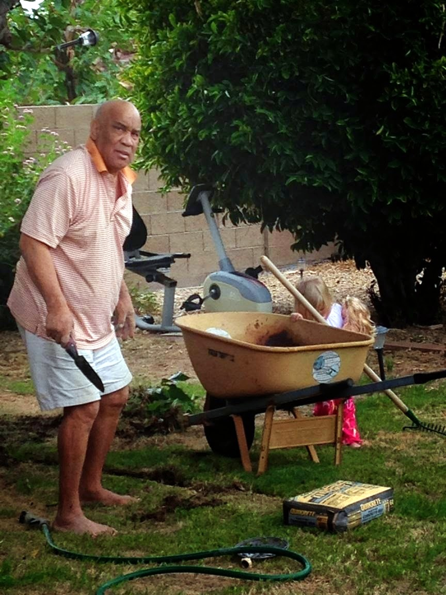

Chillazing in the spa in Prescott

In front of the jeep

Relaxing on the patio with Embrie cropped

Typical Johnny stare cropped
Working on the yard with Embrie

Happy with Embrie in shades

Blurry but has the car and the dog and Embrie